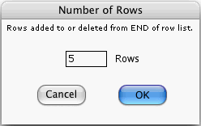

This window opens if you press the Number of Rows... button of the Node Prior-Info. window. It allows you to change the number of states of the focus node of the Node Prior-Info. window. This number is the same as the number of rows of the Amplitudes Table in that window. If you ask for more rows, new rows are added to the END of the list of rows. If you ask for fewer rows, rows are deleted from the END of the list of rows.
When you dismiss the above window by pressing OK, the number of rows for the focus node becomes that specified in the window.
When you dismiss the above window by pressing Cancel, the number of rows of the focus node remains the same as it was immediately before you summoned the window.